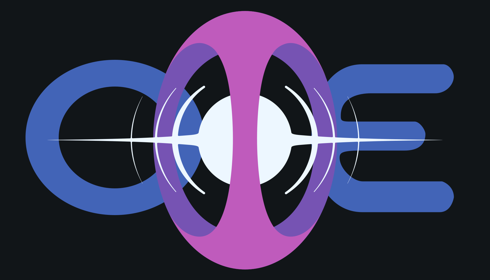

<!doctype html><html lang="en"><meta charset="utf-8"><meta name="viewport" content="width=device-width,initial-scale=1"><title>OME · approved vector master</title><style>html{color-scheme:dark;background:#111518}body{margin:0;background:#111518;color:#edf7ff;font:16px system-ui}main{max-width:1600px;margin:20px auto;padding:0 20px}img{display:block;width:100%;height:auto}a{color:#b6ddff}nav{display:flex;gap:24px;flex-wrap:wrap;padding:15px 0}</style><main><nav><a href="OME-master.svg" download>Master SVG</a><a href="layers/portal.svg" download>Portal SVG</a><a href="README.md">Layer and sizing notes</a></nav></main></html>